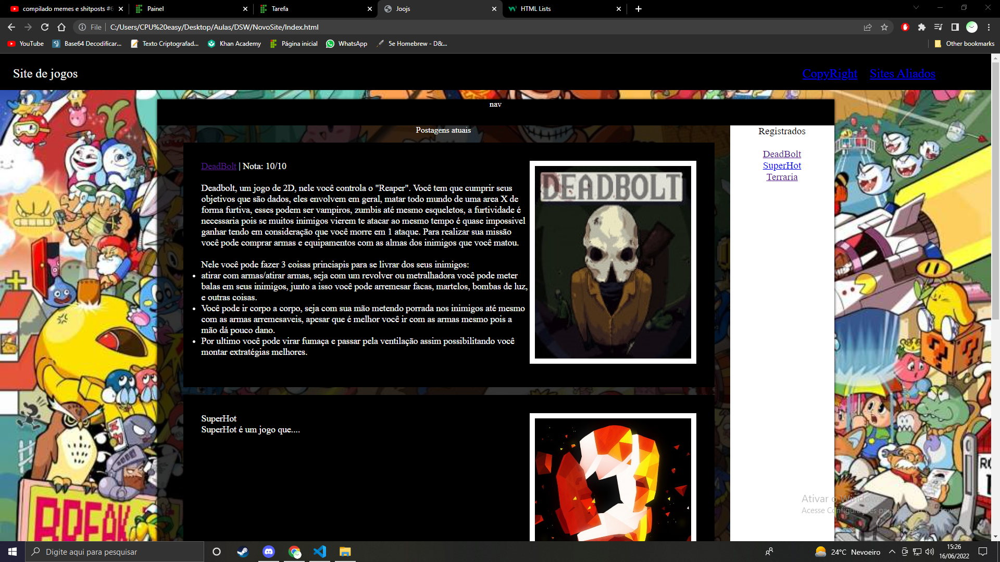
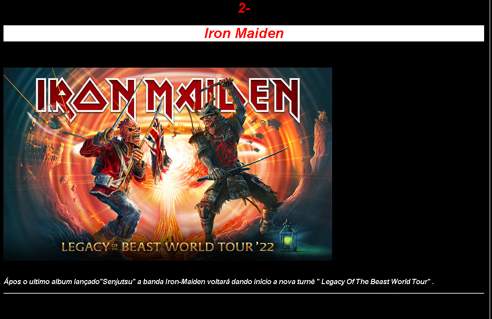

Sites Aliados

Site desenvolvido pelo criador do Universo Observável Benjamim, o site reflete a expressão espontânea e automática do pensamento (ditada apenas pelo inconsciente) e, deliberadamente incoerente, proclama a prevalência absoluta do instinto e do desejo. No site podemos ver as melhores notas e informações dos jogos: Super Hot, Deadbolt e Terraria.
Site criado por Hélio, desenvolvedor web amplamente conhecido no ramo da web e CEO da Agá-Tê-Êmi-L Enterprite, empresa milionária e bem sucedida, nesse site você pode ver informações sobre a banda Iron Maiden e seus shows.